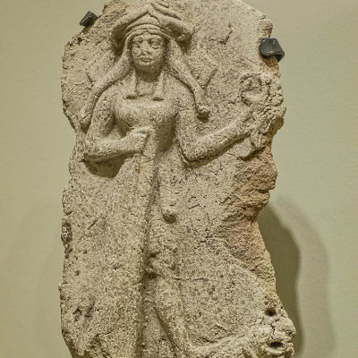
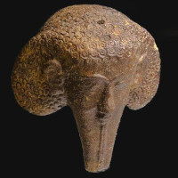
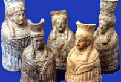

Mitologia Fenícia
A religião da Fenícia era o Politeísmo onde praticavam rituais de sacrifício de animais.
Os fenícios cultuavam, principalmente, três deuses, que são conhecidos por nomes diferentes:
El : era o deus máximo – aquele que havia criado o mundo, mas não necessariamente os deuses. Nada acontecia sem seu consentimento e por isso, ele sabe de tudo. El é representado como um homem velho, sentado no alto da montanha, distante da humanidade. Para alcançar suas graças, os fiéis devem se dirigir a sua esposa, Astarte.
Asherah: esposa de El – deusa-mãe, do mar, dos rebanhos e das colheitas. Um dos seus símbolos é a palmeira, árvore que se destaca no deserto por sua resistência, assim como ela se destaca entre os deuses.
Baal: filho de El e Astarte – era o deus das tempestades e montanhas, encarregado da fertilidade. É conhecido por vários títulos como Cavaleiro das nuvens ou Mestre das Terras, um guerreiro que combate as forças da morte. Como filho de El também atua como regente na ausência do pai.
Deuses Fenícios
Adônis: deus oriental da vegetação
Astarte: era a mais importante deusa dos fenícios. Filha de Baal, irmã de Camos (Camoeche), deusa da lua, da fertilidade, da sexualidade e da guerra.
Ba'al Hammon: deus do céu, das tempestades, do orvalho, da vegetação e da fertilidade da terra, rei dos deuses e consorte ou companheiro masculino de culto da deusa Tanit.
Baal: deus da tempestade e da fertilidade Adade e suas manifestações locais.
Baal-Gade: é a divindade da fortuna.
Baal-Peor: era um deus dos moabitas correspondente ao Priapo dos povos latinos. Ele foi endemonizado para se tornar Belfegor.
Baaltis: foi uma deusa da cidade de Biblos, na Fenícia.
Dagom: Dagom, depois que desenvolveu o pão de trigo, foi chamado de Zeus Arótrio.
Eshmun: era um deus da cura, divindade tutelar de Sidom.
Kotar: era o deus canaanita da metalurgia, senhor de feitiços e encantamentos. Construiu um palácio para o deus Baal e forjou as armas para a luta contra o deus-mar Jamm.
Melcarte: era o deus tutelar da cidade fenícia de Tiro, assim como Eshmun protegia Sídon.
Resefe: um deus da peste e da guerra. Resefe também era um protetor da realeza.
Tanit: era equivalente à deusa-lua Astarte e foi posteriormente venerada na Cartago romana na sua forma romanizada como Dea Caelestis, Juno Caelestis ou simplesmente Caelestis.
Zedeque: é a principal divindade dos Jebuseus, que habitavam Jerusalém, antes da invasão desta pelo Rei Davi. Significa Justo.